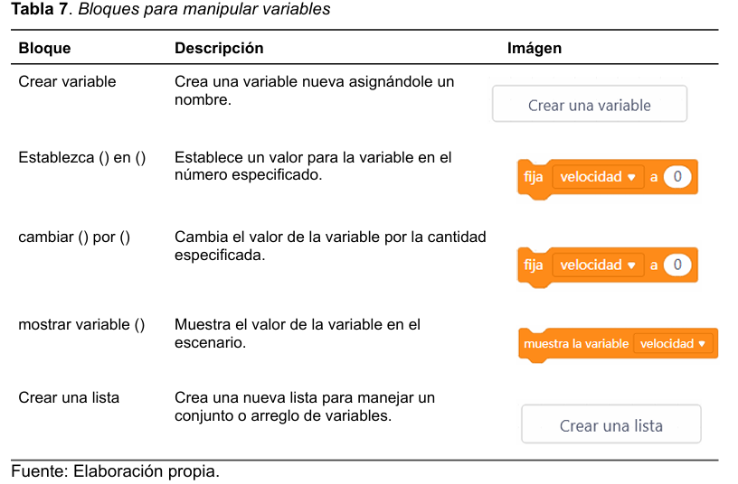

Estructuración lógica en programación por bloques.
Objetivo
- Desarrollar habilidades para la utilización de bloques o sentencias en MBlock, mediante
la creación de programas que integren estructuras lógicas, promoviendo la resolución de
problemas matemáticos y el diseño modular de programas.
Contenido
- Las variables son espacios en la memoria del computador que almacenan datos que se pueden
usar y modificar posteriormente en los scripts o programas. Para poder referenciarlas y utilizarlas
se necesita asignarles un nombre adecuado (Ruiz Gutierrez, s.f.). Los bloques disponibles en
MBlock para su manipulación se listan en la tabla 7.
Actividad
-
Las variables y los operadores son conceptos fundamentales en la programación, ya que permiten almacenar, manipular y evaluar datos de manera lógica y estructurada. Una actividad práctica sobre este tema es crucial porque brinda a los estudiantes la oportunidad de comprender cómo funcionan estos elementos en un entorno dinámico y realista.
A través de una actividad, los estudiantes pueden ver cómo las variables actúan como contenedores para datos que cambian según las necesidades del programa, y cómo los operadores realizan cálculos o toman decisiones con base en condiciones específicas. Este aprendizaje práctico fomenta el pensamiento lógico, la resolución de problemas y el entendimiento de la relación entre los datos y las instrucciones que forman un programa.
Para desarrollar la actividad, haga click en el botón de actividad.